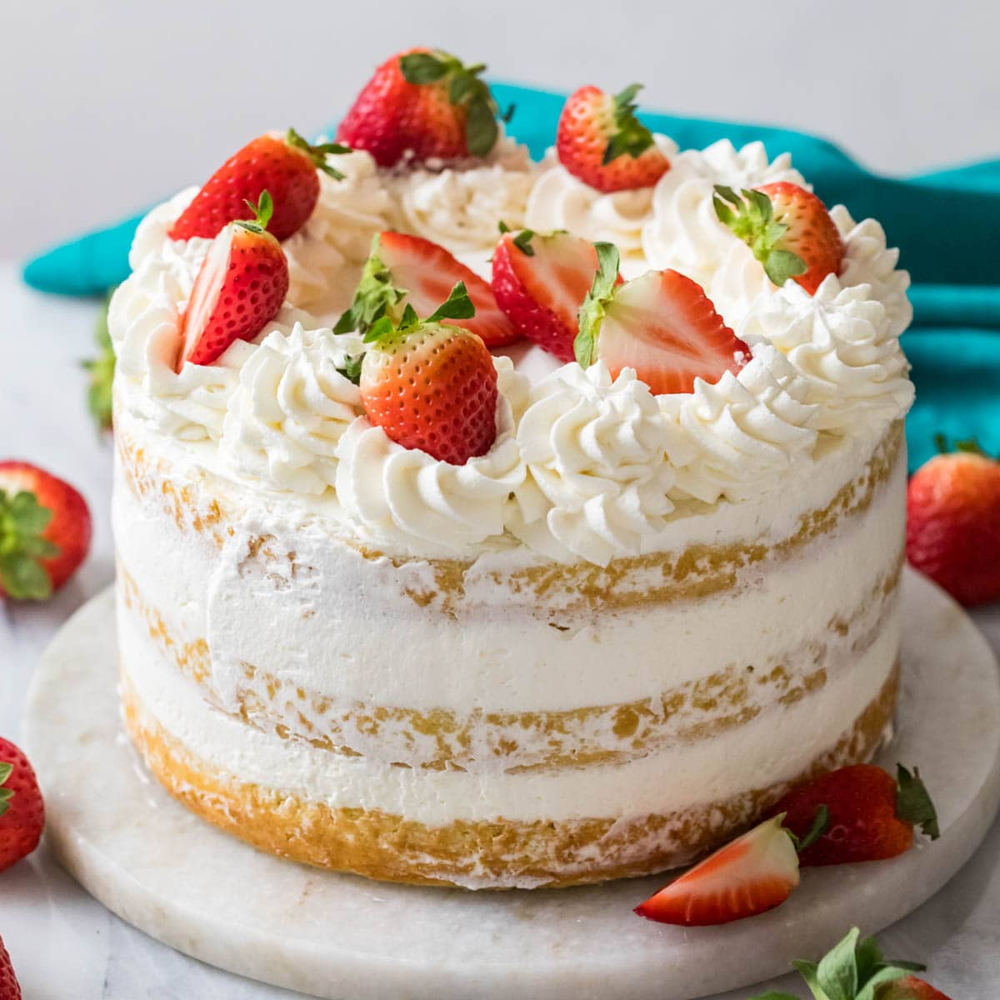
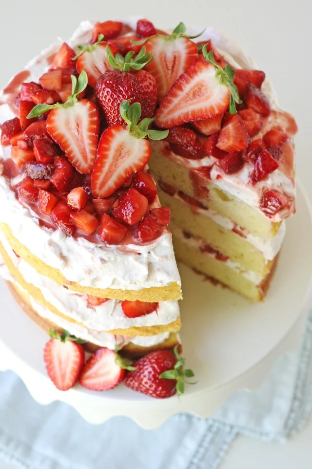
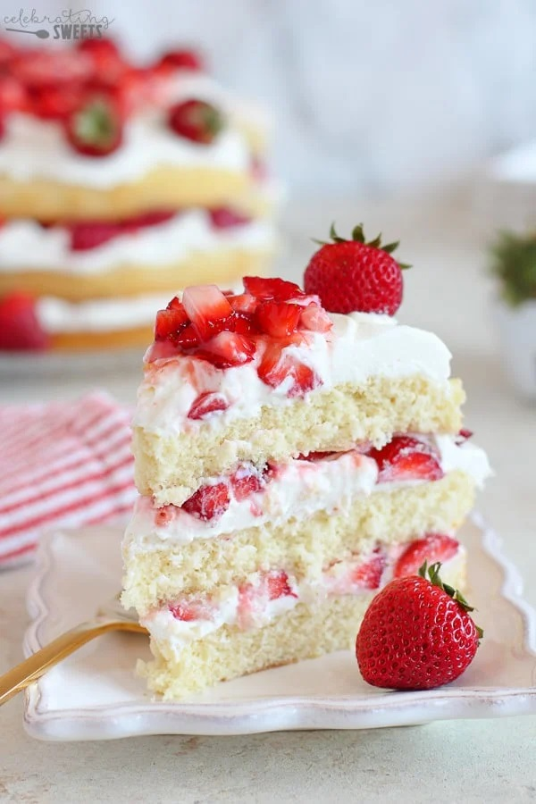

Strawberry shortcake is a timeless dessert that celebrates the simple joy of fresh, juicy strawberries layered with soft, buttery shortcakes and billows of whipped cream. This classic treat combines sweet and tangy flavors with a light, crumbly texture that melts in your mouth. Perfect for spring and summer gatherings, it's a show-stopping yet easy-to-make dessert that never fails to impress. Whether served as individual stacks or in a rustic family-style dish, strawberry shortcake is the ultimate way to highlight the season’s best berries.


Prep time: 30 minutes Cook time: 20 minutes Serving: 12 servings
INGREDIENTS
- 2 1/2 cups all purpose flour
- 3 teaspoons baking powder
- 1/2 teaspoon salt
- 1 3/4 cups granulated sugar
- 1/2 cup vegetable oil
- 2 large eggs
- 2 large egg whites
- 2 1/2 teaspoons pure vanilla extract
- 2/3 cup sour cream
- 3/4 cup milk
- 3 cups sliced or diced fresh strawberries
- 2 tablespoons strawberry jam
- additional whole strawberries, for garnish, optional
- 8 ounces cream cheese, softened to cool room temp
- 1 cup powdered sugar
- 3/4 teaspoon vanilla extract
- 2 1/4 cups heavy whipping cream, really cold, straight from the fridge
Cake:
Filling:
Frosting:
INSTRUCTIONS
- Preheat the oven to 350°F.
- In a medium bowl, whisk flour, baking powder, and salt until combined. Set aside.
- Using a mixer, beat sugar, oil, eggs, egg whites, and extracts until combined. Add the sour cream and beat until combined. Add half of the flour mixture, beating until just combined. While still beating, slowly add milk, then the remaining flour mixture. Be careful not to overmix it.
- Line three 8-inch cake pans with parchment paper and grease the pans. Evenly divide the batter between the three pans. Tap/gently drop the pans on the countertop a couple times to remove any air bubbles.
- Bake for 18-22 minutes, until a toothpick inserted into the center comes out clean. Let it cool completely.
- Combine the strawberries and jam and set aside (these will be used for the filling and topping).
- Place the cream cheese, powdered sugar, and vanilla extract in a large mixing bowl. Using a mixer, beat the mixture on medium speed until smooth. While the mixer is still whipping, slowly pour the heavy cream. Increase the speed to high and continue whipping until the cream can hold a stiff peak. It is important that the cream stays cold so that it will thicken properly.
- Place one layer of cake on a platter. Top with one-third of the frosting, then top with about 1 1/4 cups of strawberries. Place another layer of cake on top and repeat. For the third/top of layer of cake, top with remaining whipped cream frosting, then place the remaining strawberries in the center. Decorate the outside with whole strawberries, if desired.